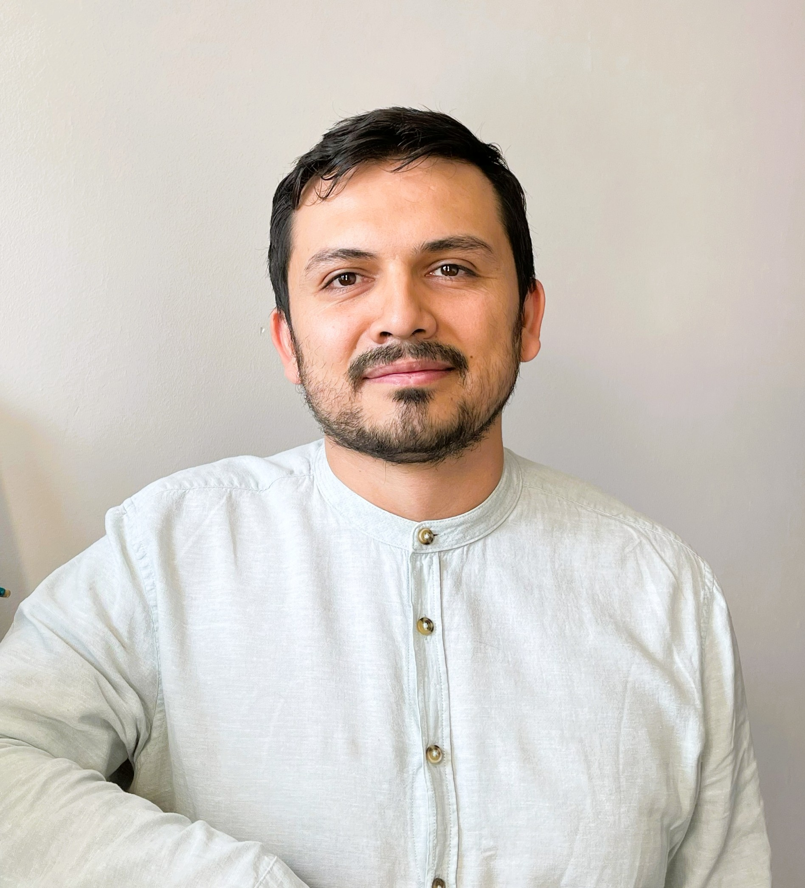

Cuatro frentes, un objetivo: la salud metabólica.
Combinamos análisis molecular, computacional y clínico. Cada línea alimenta a las demás y converge en la salud de precisión aplicada a la obesidad.
Genómica de la obesidad y la enfermedad metabólica
Variación genética, señales a nivel génico y relaciones genotipo–fenotipo para entender el riesgo metabólico.
Metabolómica y fenotipado metabólico
Metabolitos y rutas asociados a obesidad, resistencia a la insulina y respuesta a intervenciones.
Bioinformática y ciencia de datos reproducible
Flujos de análisis ómico, modelado estadístico y visualización, documentados para reutilizarse.
Salud de precisión en obesidad
Integramos datos moleculares y clínicos para descubrir biomarcadores y estratificar pacientes.
Quién está detrás del trabajo.
Investigadores y estudiantes que comparten un mismo grupo: investigación clínica, genómica, metabolómica y bioinformática.
Dra. Ruth Gutiérrez Aguilar
Estudia obesidad, enfermedad metabólica y expresión génica con un enfoque clínico-traslacional para entender la salud metabólica.

Dr. Juan José Oropeza-Valdez
Trabaja en metabolómica, biología de sistemas, bioinformática y ciencia de datos.
¿Quieres formar parte del laboratorio?
Recibimos estudiantes de licenciatura, posgrado, servicio social y estancias en proyectos de genómica, metabolómica y bioinformática de la obesidad.
Trabajo seleccionado.
Artículos representativos del grupo.
14(22):4925
Differential Gene Expression of Subcutaneous Adipose Tissue among Lean, Obese, and after RYGB: Systematic Review and Analysis
13(12):2267
Effect of the Melanocortin 4-Receptor Ile269Asn Mutation on Weight Loss Response to Dietary, Phentermine and Bariatric Surgery Interventions
Open Science 44:42
Trans-palmitoleic acid prevents weight gain, but does not modify glucose homeostasis in a rodent model of diet-induced obesity
Código abierto y reproducible.
Estos repositorios están en desarrollo. Las versiones públicas incluirán documentación, ejemplos, citación y entornos reproducibles.
Análisis de variación genética, anotación de variantes y estudios de asociación genotipo–fenotipo.
Procesamiento de datos metabolómicos, normalización, estadística, biomarcadores y visualización.
Colaboremos.
Buscamos colaboraciones, estudiantes y proyectos en genómica y metabolómica de la obesidad.